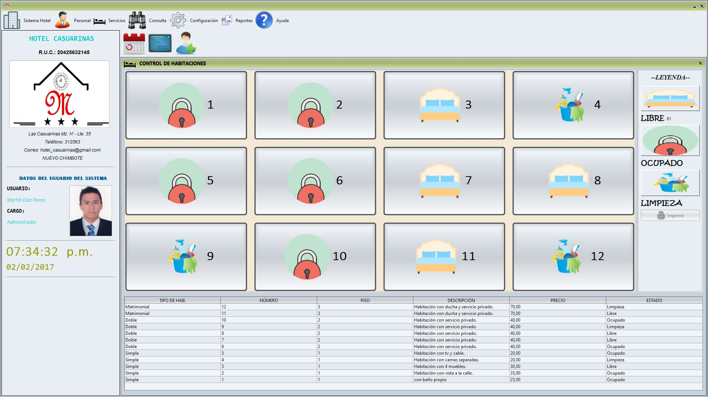
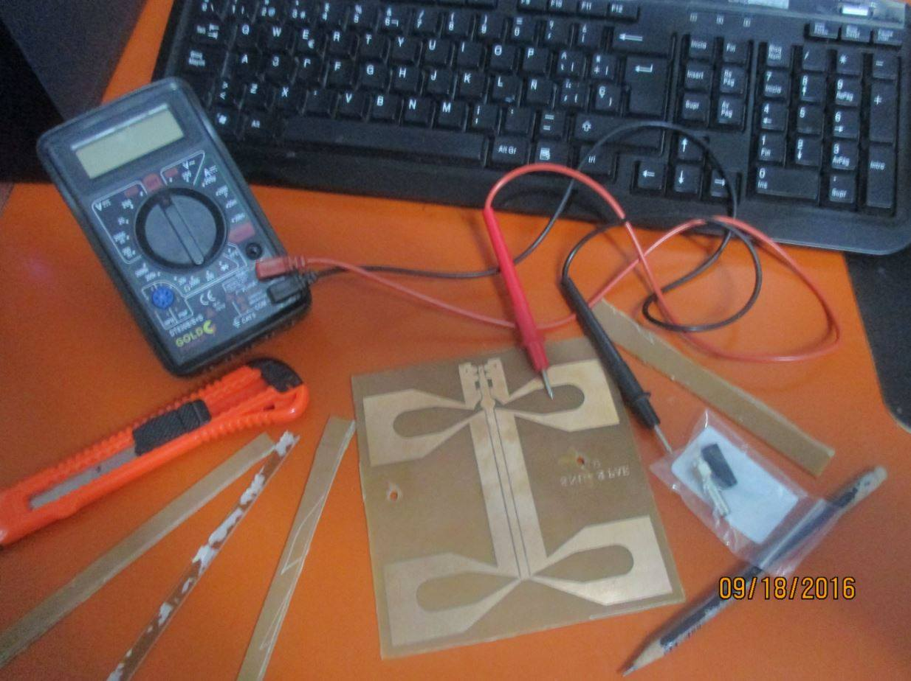
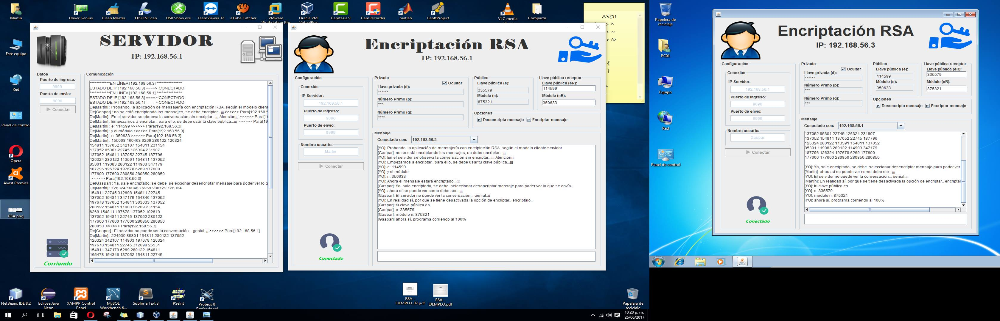
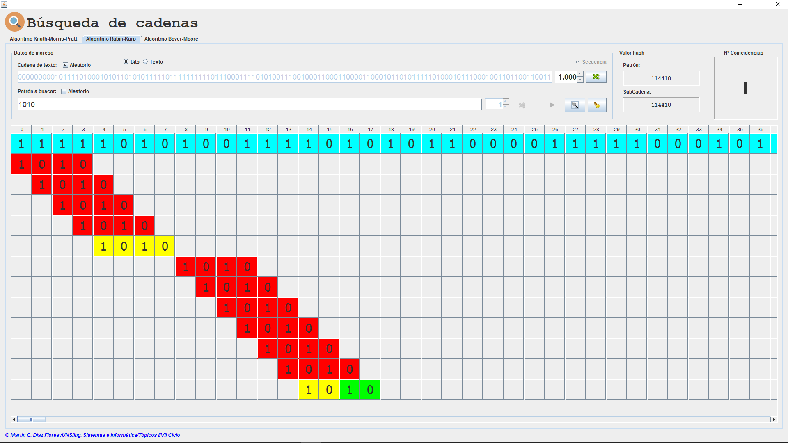

XII Reunión de trabajo de las Facultades de Educación del Consorcio de Universidades Nacionales del Norte del Perú-CUNNP sobre el proceso de Autoevaluación y Acreditación

"Modelado e implementación de un sistema para el alquiler de habitaciones del hotel "Marbella", usando la metodología orientada a objetos, Nuevo Chimbote, 2016"

"Construcción e implementación de una antena unidireccional para potenciar la recepción de wifi"
"Implementación de un sistema de ventas"

"Diseño e implementación de un sistema de chat en red local con encriptación RSA"

"Diseño e implementación de un sistema búsqueda de cadenas empleando el algoritmo de BM, KMP y RK"